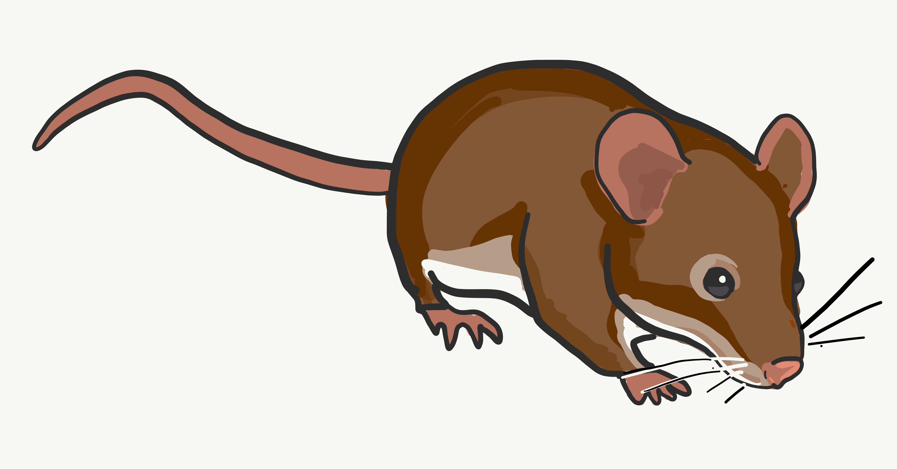

Until then, you can follow me on Twitter and view my publications here

I am an evolutionary biologist seeking to understand how selection pressures act across developmental processes. I use genomics and molecular biology in this pursuit. Most of my work has focused on understanding the molecular evolution of spermatogenesis, and how spermatogenesis evolution shapes sex chromosome evolution and male hybrid sterility in house mice. More recently, I have started studying the evolution of the retina in fish. See my Research page to find out more, and check out my publications and presentations here.
I am currently a postdoc in Nathan Clark's lab at the Universit of Utah. I did my Ph.D. with Jeff Good at the University of Montana and worked in Matt Dean's lab at the University of Southern California as an undergraduate and master's student.